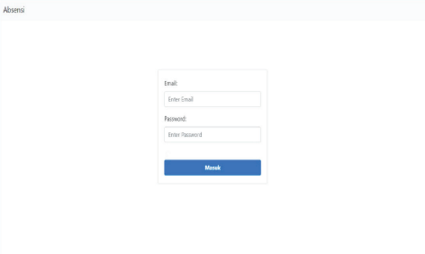

sistem presensi atau kehadiran , merupakan salah satu cara untuk mengelola kehadiran siswa. Hal tersebut dilakukan untuk mengurangi total kerugian akibat kurangnya produktivitas dan ketidakhadiran siswa.
Radio frequency identification (RFID) adalah sebuah teknologi yang menggunakan komunikasi via gelombang elektromagnetik untuk merubah data antara terminal dengan suatu objek seperti produk barang, hewan, ataupun manusia dengan tujuan untuk identifikasi dan penelusuran jejak melalui penggunaan suatu piranti yang bernama RFID tag.
Keunikan yang dimilikinya adalah bisa dilacak dari suatu lokasi ke lokasi yang lainnya. Hal ini dapat membantu perusahaan untuk melawan aksi pencurian dan bentuk-bentuk product loss yang lainnya. RFID juga sudah diajukan untuk penggunaan pada point-of-sale yang menggantikan kasir dengan suatu mesin otomatis tanpa harus melakukan barcode scanning. Hal ini menjadi peluang yang besar dalam pengembangannya bagi PPTIK-ITB beserta komunitas agar teknologi RFID bisa dimanfaatkan khalayak ramai secara maksimal.
Cara kerja RFID adalah berdasarkan pada cara kerja dua komponen yang menyusun RFID, yaitu tag dan reader. Komponen-komponen ini dikombinasikan sehingga dapat melakukan pengidentifikasian data dari tag dan reader. Sedangkan cara kerja RFID Attendance System yaknik kartu RFID harus di tap atau didekatkan pada mesin absensi sehingga mesin dapat membaca data yang terdapat pada kartu tersebut dan data yang sudah terbaca akan dikirimkan ke server dan data base untuk dicocokan dengan data yang ada. Jika data sudah cocok maka hasilnya akan dikirimkan ke website. Dan nantinya guru dapat melihat hasilnya di dalam website yang sudah dibuat oleh PPTIK.
Dalam dunia pendidikan tingkat kedisiplinan sangat diutamakan agar proses belajar mengajar dapat berlangsung sesuai dengan jadwal yang sudah ditentukan. Permasalahan yang sering timbul adalah terlambat dalam menghadiri pembelajaran. Hal ini menimbulkan siswa melakukan tindak indispliner antara lain melakukan penitipan absen sehingga guru tidak dapat mengetahui jumlah siswa yang hadir sebenarnya. Dalam menghindari hal tersebut terjadi, maka dibuat suatu sistem absensi yang dapat di monitoring melalui website dan aplikasi moibile. Sistem tersebut memanfatkan RFID (Radio Frequency Identification Device) Reader sebagai tanda pengenal setiap siswa.
Maka dari itu, untuk mengatasi permasalahan tersebut dibuatlah alat Smart Card Saga yang telah terintegrasi dengan internet agar mempermudah proses kerjanya.
Smart Card Saga adalah suatu alat atau device yang dirancang untuk mempermudah kerja guru saat melakukan pengecekan kehadiran siswa dengan meng- gunakan kartu RFID (Radio Fre- quency Identification Device) sebagai alat untuk absen.